קול המורה וכלים למחנך
מחקרים על קול המורה, סיכומי מחקר, פרומפטים וכלים לכיתה
104 פריטים
משמעת וסמכות בכיתה (52)
משמעת – קטלוג
קטלוג משמעת בכיתה טוען... 📘 קטלוג מדור משמעת אוסף מסודר של כל הדפים בנושא משמעת כיתתית וסמכות חינוכית 📄 30 דפי…
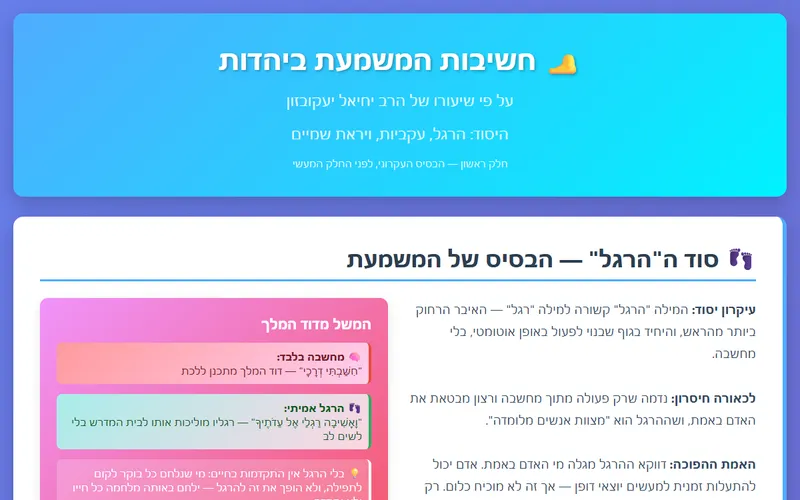
חשיבות המשמעת ביהדות 1
ל פי שיעורו של הרב יחיאל יעקובזון היסוד: הרגל, עקביות, ויראת שמיים חלק ראשון — הבסיס העקרוני, לפני החלק המעשי …
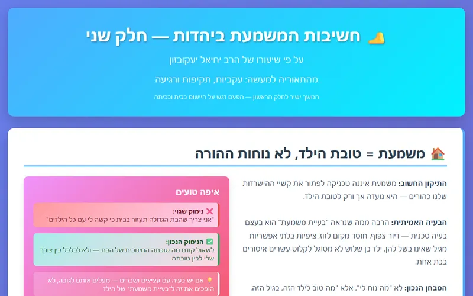
חשיבות המשמעת ביהדות — חלק שני
על פי שיעורו של הרב יחיאל יעקובזון מהתאוריה למעשה: עקביות, תקיפות ורגיעה המשך ישיר לחלק הראשון — הפעם דגש על ה…
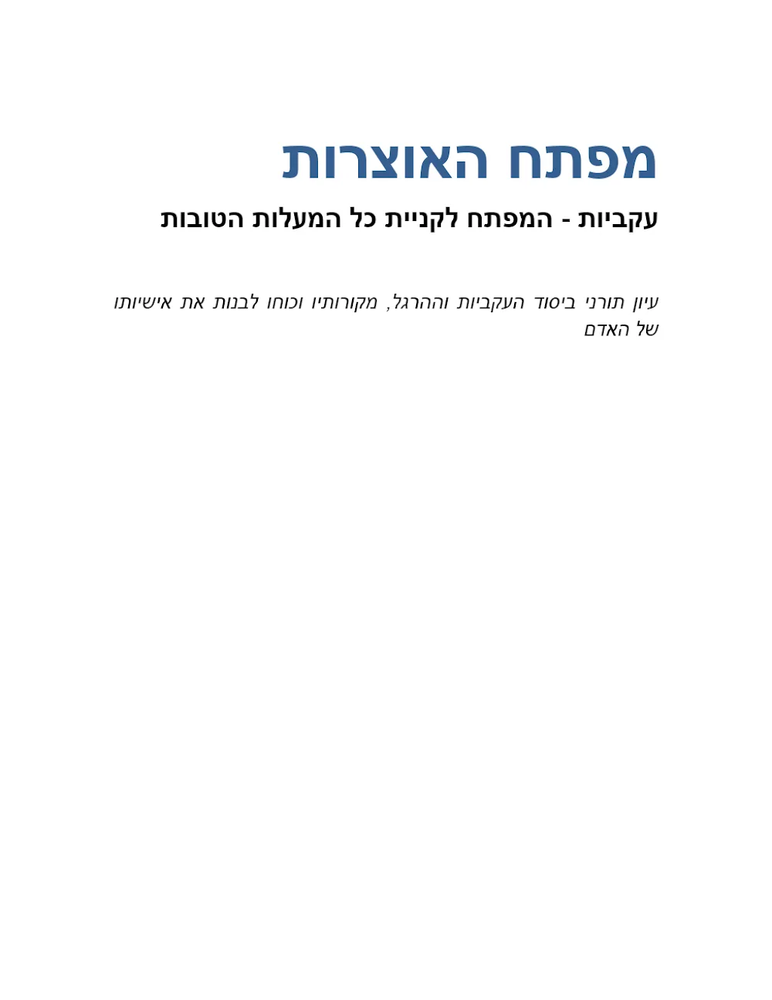
מפתח האוצרות!
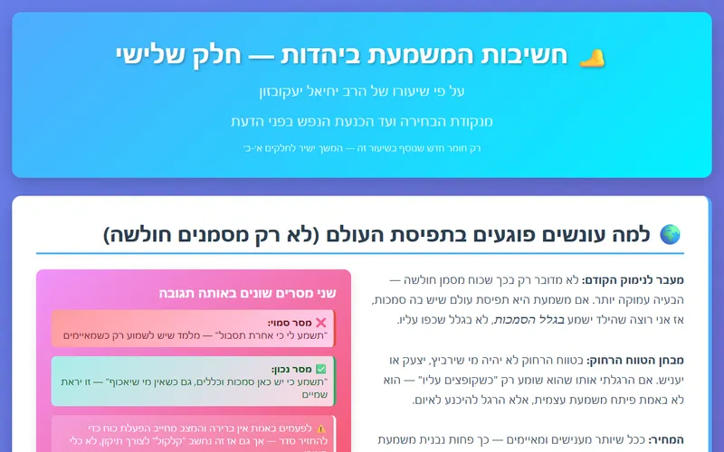
3- חשיבות המשמעת ביהדות — חלק שלישי
חשיבות המשמעת ביהדות - חלק שלישי 🦶 חשיבות המשמעת ביהדות — חלק שלישי על פי שיעורו של הרב יחיאל יעקובזון מנקודת …
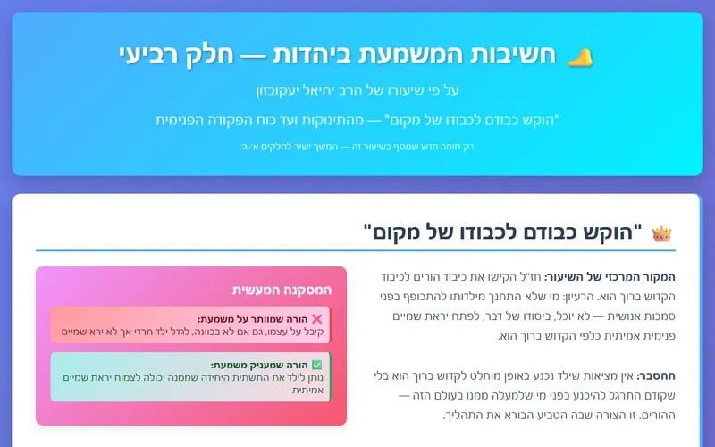
4 - חשיבות המשמעת ביהדות — חלק רביעי חשיבות המשמעת ביהדות — חלק רביעי
חשיבות המשמעת ביהדות - חלק רביעי 🦶 חשיבות המשמעת ביהדות — חלק רביעי על פי שיעורו של הרב יחיאל יעקובזון "הוקש כ…
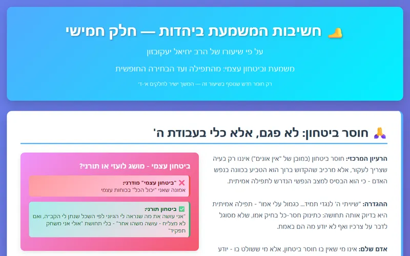
5 - חשיבות המשמעת ביהדות — חלק חמישי חשיבות המשמעת ביהדות — חלק חמישי
חשיבות המשמעת ביהדות - חלק חמישי 🦶 חשיבות המשמעת ביהדות — חלק חמישי על פי שיעורו של הרב יחיאל יעקובזון משמעת ו…
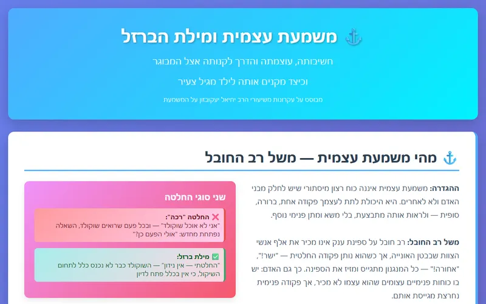
משמעת עצמית ומילת הברזל
⚓ משמעת עצמית ומילת הברזל חשיבותה, עוצמתה והדרך לקנותה אצל המבוגר וכיצד מקנים אותה לילד מגיל צעיר מבוסס על עקר…
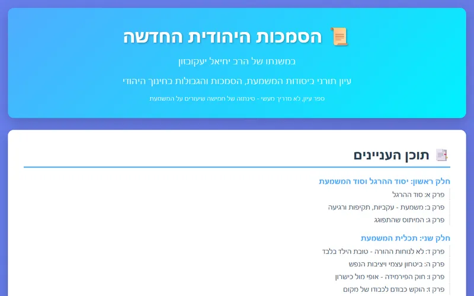
ספר - הסמכות היהודית החדשה
הסמכות היהודית החדשה 📜 הסמכות היהודית החדשה במשנתו של הרב יחיאל יעקובזון עיון תורני ביסודות המשמעת, הסמכות והג…
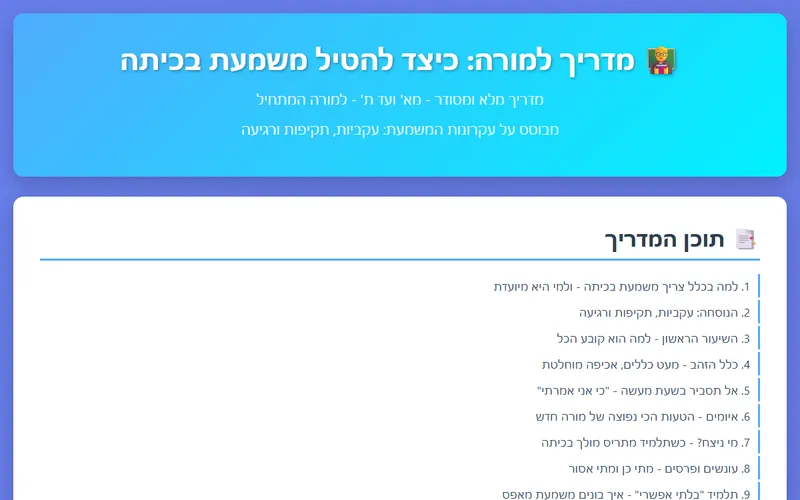
מדריך למורה: כיצד להטיל משמעת בכיתה
מדריך מלא ומסודר - מא' ועד ת' - למורה המתחיל מבוסס על עקרונות המשמעת: עקביות, תקיפות ורגיעה 📑 תוכן המדריך 1. ל…
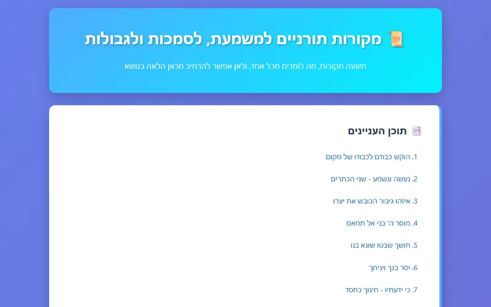
מקורות תורניים למשמעת, לסמכות ולגבולות
📜 מקורות תורניים למשמעת, לסמכות ולגבולות תשעה מקורות, מה לומדים מכל אחד, ולאן אפשר להרחיב מכאן הלאה בנושא 📑 תו…
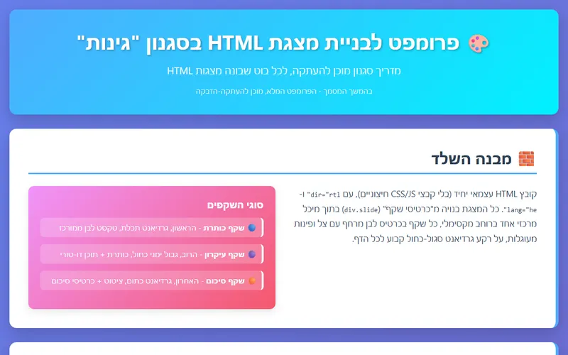
פרומפט לבניית מצגת HTML בסגנון "גינות" פרומפט לבניית מצגת HTML בסגנון
וט שבונה מצגות HTML בהמשך המסמך - הפרומפט המלא, מוכן להעתקה-הדבקה 🧱 מבנה השלד קובץ HTML עצמאי יחיד (בלי קבצי C…
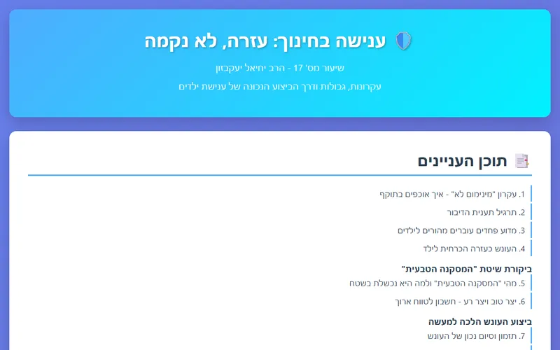
ענישה בחינוך: עזרה, לא נקמה
שיעור מס' 17 - הרב יחיאל יעקבזון עקרונות, גבולות ודרך הביצוע הנכונה של ענישת ילדים 📑 תוכן העניינים 1. עקרון "מ…
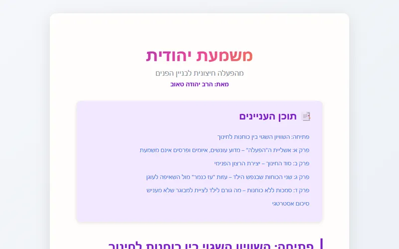
משמעת יהודית מהפעלה חיצונית לבניין הפנים
מאת: הרב יהודה טאוב 📑 תוכן העניינים פתיחה: השוויון השגוי בין כוחנות לחינוך פרק א: אשליית ה"הפעלה" – מדוע עונשי…
מודל גפן מול התורה
מחלוקת יסודית בחינוך ⚖️ מודל גפן מול התורה מדוע הגישה התורנית חולקת מכל וכול על "מודל גפן" בשלוש נקודות היסוד …
מדוע השיטה התורנית חולקת על תרבות התיוג הפסיכולוגי
עיון במקורות חז"ל ובדרכי החינוך "אל תעש עצמך כעורכי הדיינים" - כשההגדרה המקצועית הופכת בעצמה לבעיה 1️⃣ הטבע דו…
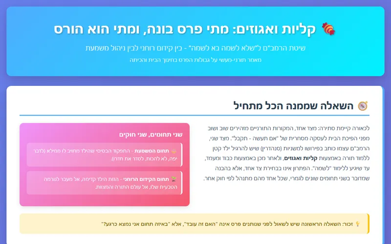
קליות ואגוזים: מתי פרס בונה, ומתי הוא הורס
שיטת הרמב"ם ל"שלא לשמה בא לשמה" - בין קידום רוחני לבין ניהול משמעת מאמר תורני-מעשי על גבולות הפרס בחינוך הבית …
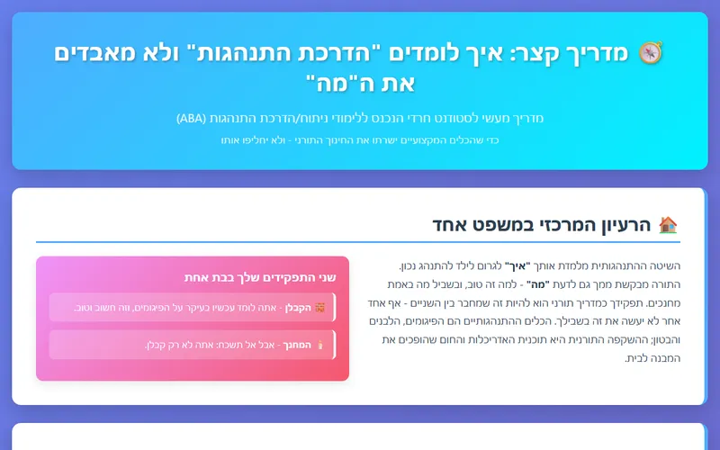
מדריך קצר: איך לומדים "הדרכת התנהגות" ולא מאבדים את ה"מה"
🧭 מדריך קצר: איך לומדים "הדרכת התנהגות" ולא מאבדים את ה"מה" מדריך מעשי לסטודנט חרדי הנכנס ללימודי ניתוח/הדרכת …
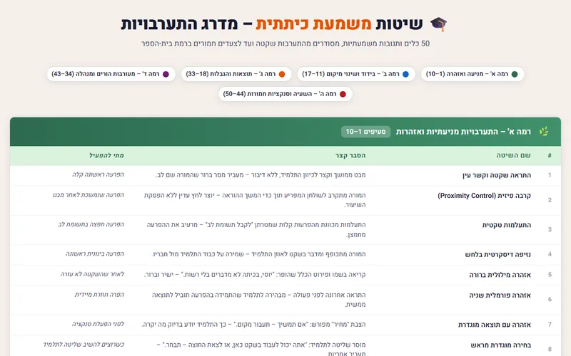
שיטות משמעת כיתתית – מדרג התערבויות
🎓 שיטות משמעת כיתתית – מדרג התערבויות 50 כלים ותגובות משמעתיות, מסודרים מהתערבות שקטה ועד לצעדים חמורים ברמת ב…
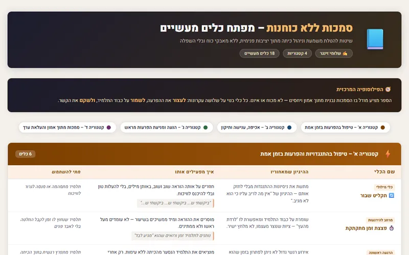
סמכות ללא כוחנות – מפתח כלים מעשיים
📘 סמכות ללא כוחנות – מפתח כלים מעשיים שיטות להטלת משמעת וניהול כיתה מתוך יציבות פנימית, ללא מאבקי כוח ובלי השפ…
80 כלי משמעת – מדרג מלא למורה
🎓 80 כלי משמעת – מדרג מלא למורה מניעה שקטה · הצבת גבולות · תיעוד · פסקי-זמן · תוצאות הגיוניות · צדק מאחה · סנק…
התמודדות עם הפרעות התנהגות בילדים
ך מקצועי התמודדות עם הפרעות התנהגות בילדים 9 אסטרטגיות של תמיכה התנהגותית חיובית – שלב אחר שלב 1 🎯 צרו ציפיות …
מדריך מקצועי למורים תלמיד עם ODD בכיתה שלי
הפרעת התנגדות מתריסה – כלים, אסטרטגיות ומה לעשות ברגע האמת 🔍 מה זה ODD? ODD – Oppositional Defiant Disorder , …
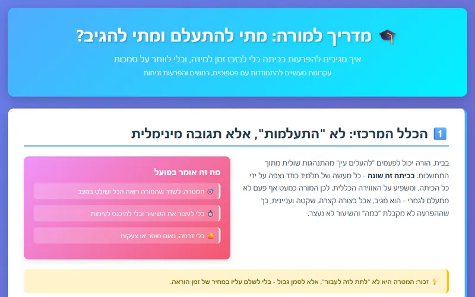
מדריך למורה: מתי להתעלם ומתי להגיב?
🎓 מדריך למורה: מתי להתעלם ומתי להגיב? איך מגיבים להפרעות בכיתה בלי לבזבז זמן למידה, ובלי לוותר על סמכות עקרונו…
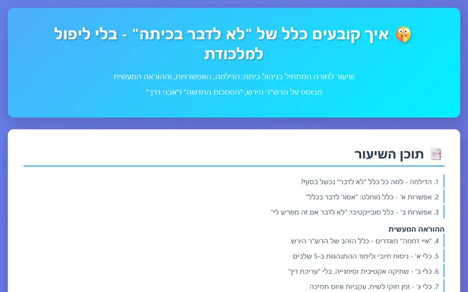
איך קובעים כלל של לא לדבר בכיתה - בלי ליפול למלכודת
איך קובעים כלל של "לא לדבר בכיתה" בלי ליפול למלכודת 🤫 איך קובעים כלל של "לא לדבר בכיתה" - בלי ליפול למלכודת שי…
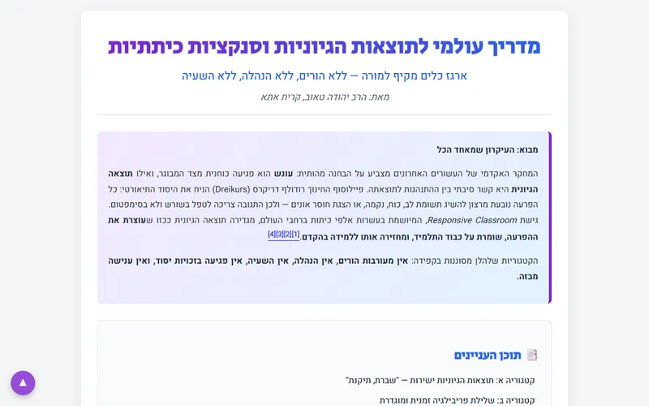
משמעת – מחקר
מדריך עולמי לתוצאות הגיוניות וסנקציות כיתתיות | ארגז כלים מקיף למורה מדריך עולמי לתוצאות הגיוניות וסנקציות כית…
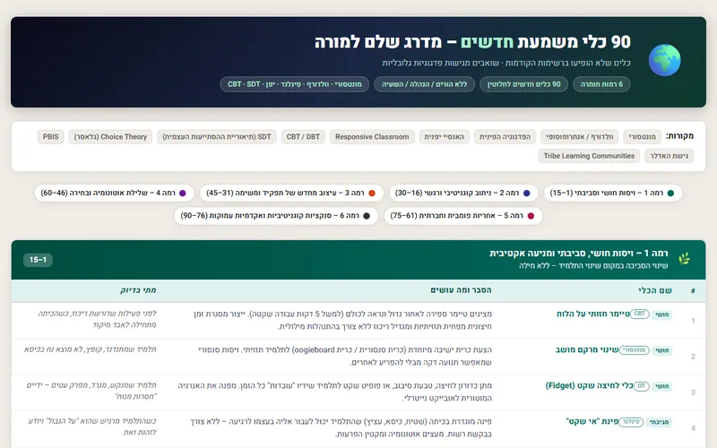
90 כלי משמעת חדשים – מדרג שלם למורה
0 כלי משמעת חדשים – מדרג שלם למורה כלים שלא הופיעו ברשימות הקודמות · שואבים מגישות פדגוגיות גלובליות 6 רמות חו…
שלושה עקרונות ברזל להטלת משמעת בכיתה
ביעילות, בביטחון, וללא שחיקה מבוסס על משל הסוכריות מבית הכנסת 🍬 המשל: זריקת הסוכריות בבר-מצווה סיפור שמורים מס…
לאחוז בתכונה של מבוגר
| משמעת מתוך יציבות מדריך מעשי למורה משמעת בלי שחיקה לאחוז בתכונה של מבוגר הסמכות בכיתה מתחילה לא במה שהתלמיד …
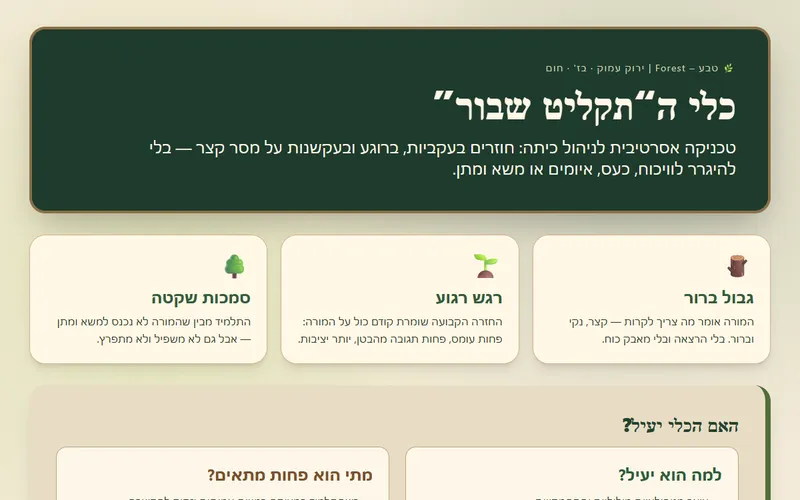
כלי ה“תקליט שבור”
טכניקה אסרטיבית לניהול כיתה: חוזרים בעקביות, ברוגע ובעקשנות על מסר קצר — בלי להיגרר לוויכוח, כעס, איומים או מש…
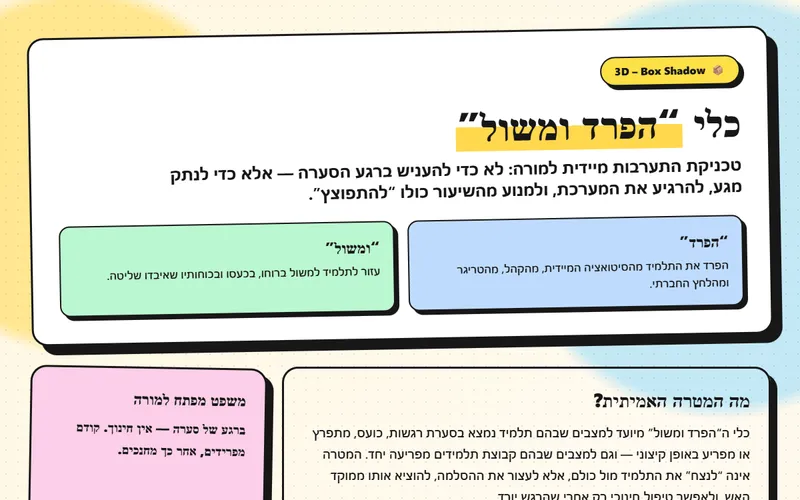
כלי “הפרד ומשול”
טכניקת התערבות מיידית למורה: לא כדי להעניש ברגע הסערה — אלא כדי לנתק מגע, להרגיע את המערכת, ולמנוע מהשיעור כול…
יציבות המורה המבוגר האחראי בכיתה
לפני שמנהלים כיתה — מנהלים את עצמנו. מורה יציב אינו נבהל, אינו מתפרק מכל הפרעה, ואינו לוקח את מבחני הגבול באופ…
משמעת – מצב 0
מצב 0 | שגרת פתיחה חשמלית לכיתה ⚡ ⚡ Electric Storm · כלי פתיחה לשיעור מצב 0 השיעור לא מתחיל מתוך רעש, בלגן ושא…
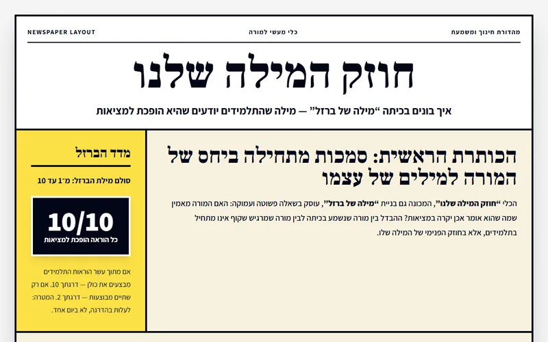
חוזק המילה שלנו
| מילה של ברזל מהדורת חינוך ומשמעת כלי מעשי למורה Newspaper Layout חוזק המילה שלנו איך בונים בכיתה “מילה של בר…
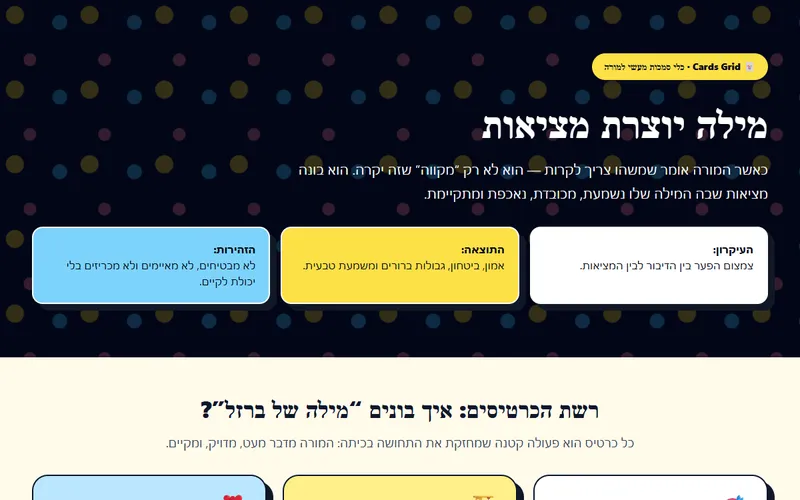
מילה יוצרת מציאות
| Cards Grid 🃏 Cards Grid · כלי סמכות מעשי למורה מילה יוצרת מציאות כאשר המורה אומר שמשהו צריך לקרות — הוא לא ר…
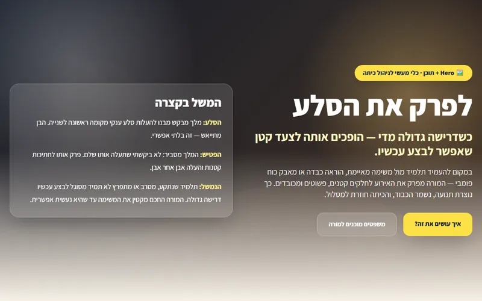
לפרק את הסלע
| כלי לניהול כיתה 🖼️ Hero + תוכן · כלי מעשי לניהול כיתה לפרק את הסלע כשדרישה גדולה מדי — הופכים אותה לצעד קטן …
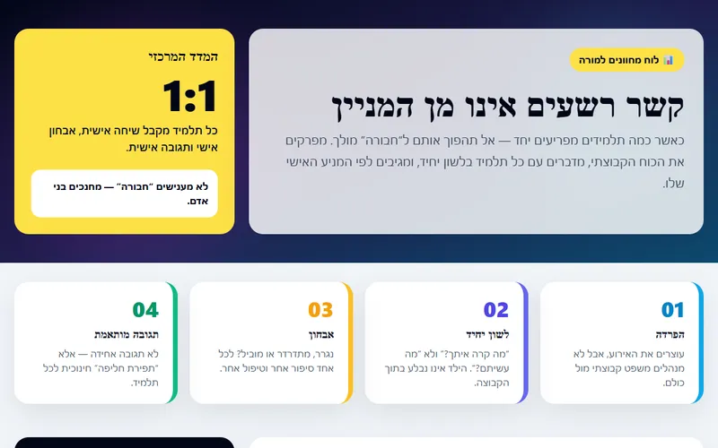
קשר רשעים אינו מן המניין
| Dashboard 📊 לוח מחוונים למורה קשר רשעים אינו מן המניין כאשר כמה תלמידים מפריעים יחד — אל תהפוך אותם ל“חבורה”…
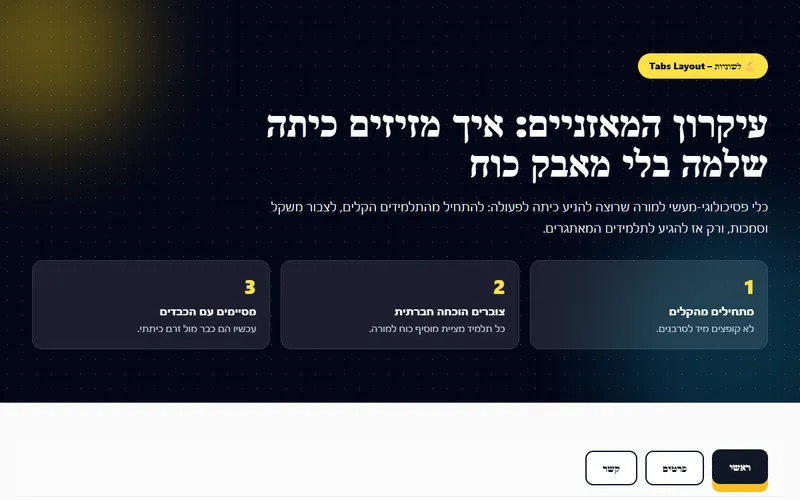
עיקרון המאזניים: איך מזיזים כיתה שלמה בלי מאבק כוח
כלי פסיכולוגי-מעשי למורה שרוצה להניע כיתה לפעולה: להתחיל מהתלמידים הקלים, לצבור משקל וסמכות, ורק אז להגיע לתלמ…
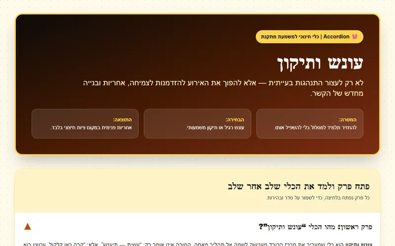
עונש ותיקון
| Accordion 🪗 Accordion | כלי חינוכי למשמעת מתקנת עונש ותיקון לא רק לעצור התנהגות בעייתית — אלא להפוך את האירו…
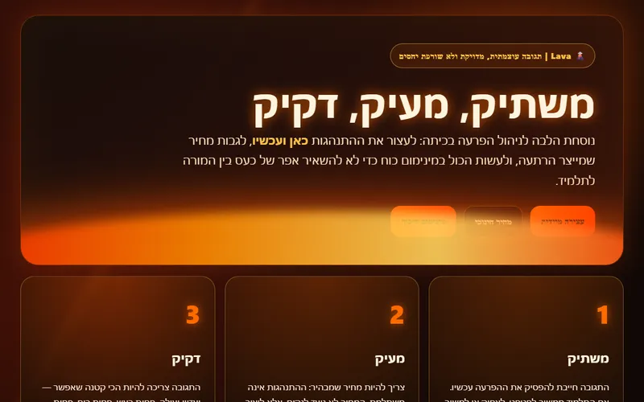
משתיק, מעיק, דקיק
| Lava 🌋 Lava | תגובה עוצמתית, מדויקת ולא שורפת יחסים משתיק, מעיק, דקיק נוסחת הלבה לניהול הפרעה בכיתה: לעצור א…
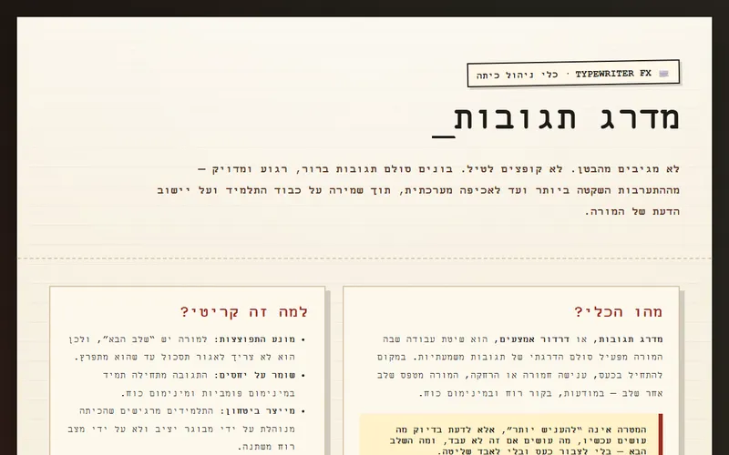
מדרג תגובות_
לא מגיבים מהבטן. לא קופצים לטיל. בונים סולם תגובות ברור, רגוע ומדויק — מההתערבות השקטה ביותר ועד לאכיפה מערכתי…
איזה שיקוי עובר ממני לתלמיד?
אותה פעולה חינוכית יכולה להרגיש כמו אמון, או כמו התקפה. ההבדל אינו רק במה שהמורה עושה — אלא באיזו כוונה, אנרגי…
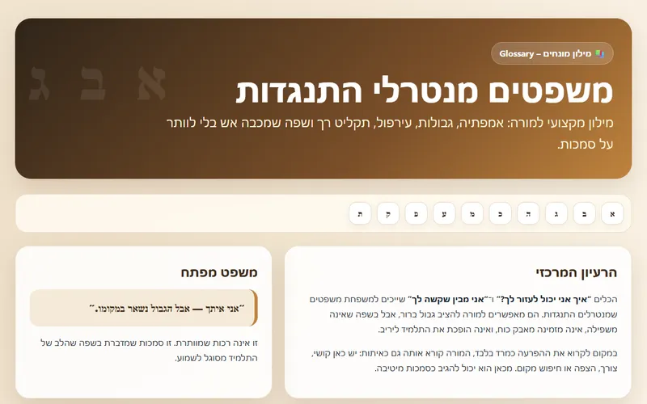
משפטים מנטרלי התנגדות
מילון מונחים 📚 מילון מונחים – Glossary משפטים מנטרלי התנגדות מילון מקצועי למורה: אמפתיה, גבולות, עירפול, תקליט…
שבח תיאורי
Spinner Loader ⏳ Spinner Loader · שבח שמטעין מבפנים שבח תיאורי במקום לחלק לתלמיד תוויות כמו “מדהים”, “גאון” או…
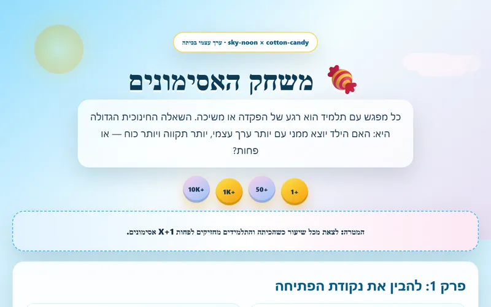
משחק האסימונים
בניית ערך עצמי בכיתה sky-noon × cotton-candy · ערך עצמי בכיתה 🍬 משחק האסימונים כל מפגש עם תלמיד הוא רגע של הפק…
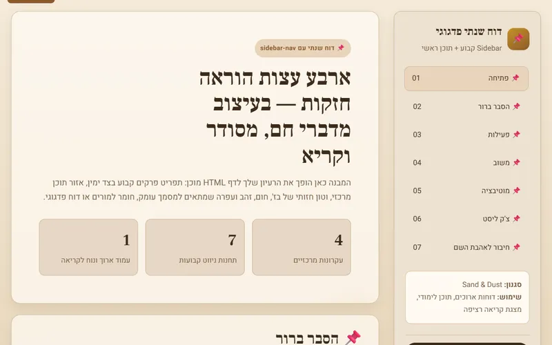
ארבע עצות הוראה חזקות
דוח שנתי עם sidebar-nav דלג לתוכן 📌 דוח שנתי פדגוגי Sidebar קבוע + תוכן ראשי 📌 פתיחה 01 📌 הסבר ברור 02 📌 פעילו…
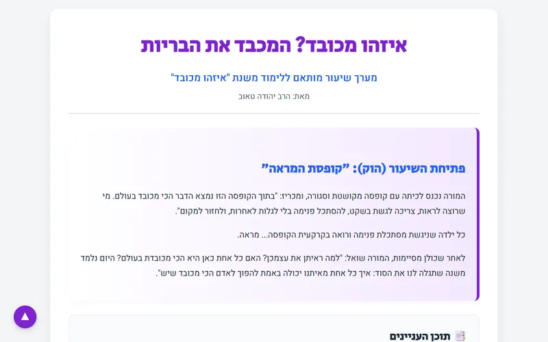
דוגמא לארבע עצות - ישום
איזהו מכובד? המכבד את הבריות - מערך שיעור איזהו מכובד? המכבד את הבריות מערך שיעור מותאם ללימוד משנת "איזהו מכו…
מדריר לינדה - למשמעת ב 3 שלבים
איך לנהל כיתה ללא רעש 🕊️ איך לנהל כיתה שקטה ולהפחית הפרעות ✨ מדריך למורה – שלוש שלבים ליצירת כיתה ממוקדת, מכבד…
אינדקס שיעורי הרב יעקובזון
חינוך ילדים — הרב יחיאל יעקובזון 📚✨ חינוך ילדים אינדקס לסדרת שיעורים על חינוך ילדים מאת: הרב יחיאל יעקובזון 📖 …
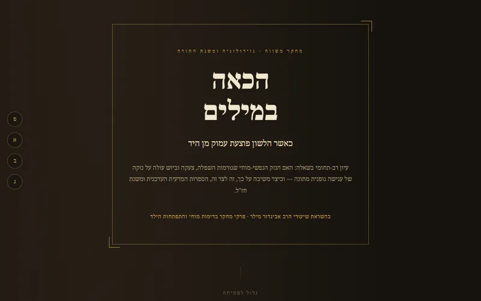
הכאה במילים
| מחקר משווה בין אלימות מילולית לענישה גופנית פ א ב ג מחקר משווה · נוירולוגיה ומשנת התורה הכאה במילים כאשר הלש…
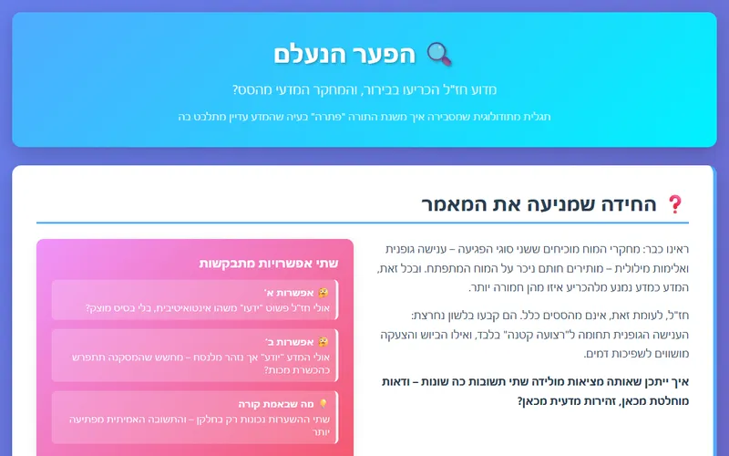
הפער הנעלם
: מדוע חז"ל הכריעו והמחקר היסס 🔍 הפער הנעלם מדוע חז"ל הכריעו בבירור, והמחקר המדעי מהסס? תגלית מתודולוגית שמסבי…
סיפורהרב קלצקין והדרך להעניש
המורה – הדרכה, דרשות וכלים (14)
סיום כיתה ו
׳ – סעודת הודיה סעודת הודיה // סיום כיתה ו׳ וַיַּעַשׂ אַבְרָהָם מִשְׁתֶּה גָדוֹל דרשה לסיום שנת הלימודים SCHOO…
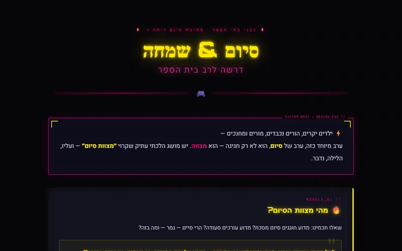
סיום כיתה ו - 2
דרשת סיום כיתה ו׳ | סייברפאנק ⚡ רבני בתי הספר · מסיבת סיום כיתה ו׳ ⚡ סיום & שמחה דרשה לרב בית הספר 🎮 ⚡ ילדים י…
דרשה לבנות סיום כיתה ו
דרשה לסיום כיתה ו׳ – בנות | סעודת הודיה סעודת הודיה // סיום כיתה ו׳ – בנות מִי יִמָּלֵל גְּבוּרוֹת ה׳ יַשְׁמִי…
הפשט והדרש מדריך יסודי להבנת שני רבדי המקרא
מאת: הרב יהודה טאוב 🎯 פרק 1: ההקדמה - למה זה חשוב? המטרה של הספר 🧭 להבין את ההבדל בין שני רבדים: 📖 הפשט - המשמ…
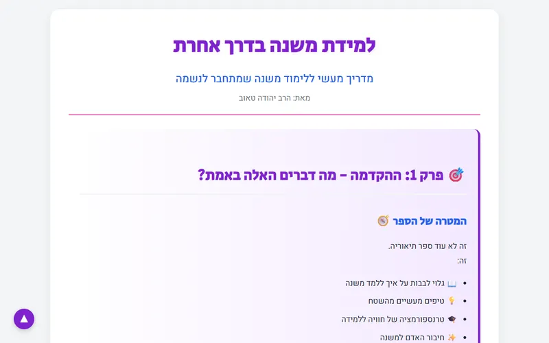
מידת משנה בדרך אחרת - מדריך מעשי ללימוד משנה שמתחבר לנשמה
למידת משנה בדרך אחרת מדריך מעשי ללימוד משנה שמתחבר לנשמה מאת: הרב יהודה טאוב 🎯 פרק 1: ההקדמה - מה דברים האלה ב…
למידה מבוססת פרויקטים
PBL 📚 מדריך לימוד למידה מבוססת פרויקטים חינוך בעידן השינויים – מהנחנו המסורתי לעשייה אמיתית 14 פרקים 4 עקרונות…
מסיבת סיום - מאיפה זה בא?
מסיבת סיום – מאיפה זה בא? ✦ שיעור מיוחד ✦ 🎉 מסיבת סיום מאיפה זה בא? האם יש מקור בתורה לחגוג כשגומרים משהו גדול…
פרויקט יומי
חמד יומי – ספר השיעור 🦸 דף פתיחה לאפליקציה · חופש גדול · חמד יומי חמד יומי ספר השיעור המלא: איך הופכים את החופ…
שיטת החברותא
ספר השיעור — חכמה, חינוך ושינוי 📖 ספר השיעור — מהתמלול לידע חכמה, חינוך ושינוי אמיתי ספר מסודר לפי פרקים — מחי…
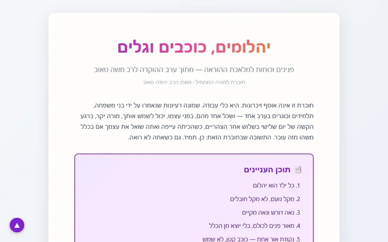
יהלומים, כוכבים וגלים פנינים וכוחות למלאכת ההוראה — מתוך ערב ההוקרה לרב משה
טאוב חוברת למורה המתחיל · מאת: הרב יהודה טאוב חוברת זו אינה אוסף זיכרונות. היא כלי עבודה. שמונה רעיונות שנאמרו…
תפילת המורה
ריבונו של עולם - תפילת המורה 🙏 ✨ ריבונו של עולם ✨ תפילת המורה לפני הכניסה לכיתה תפילה + כלים מעשיים = הצלחה אמ…
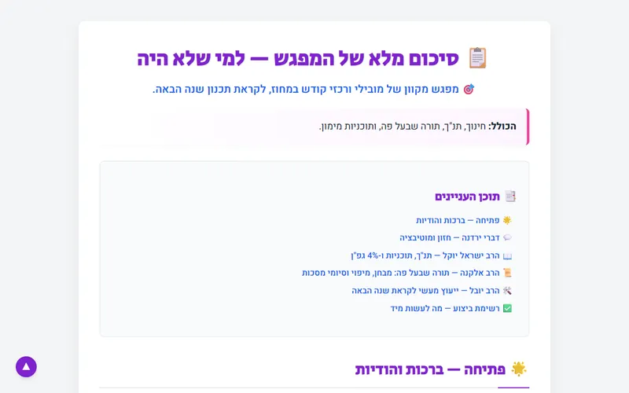
מפגש רכזי קודש - 1
סיכום מלא של המפגש — למי שלא היה 📋 סיכום מלא של המפגש — למי שלא היה 🎯 מפגש מקוון של מובילי ורכזי קודש במחוז, ל…
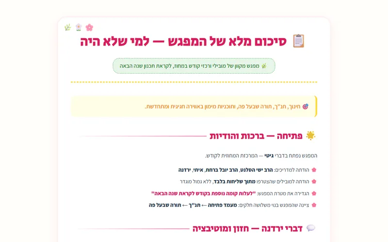
מפגש רכזי קודש
סיכום מלא של המפגש — Spring Torah 📋 סיכום מלא של המפגש — למי שלא היה 🌿 מפגש מקוון של מובילי ורכזי קודש במחוז, …
הרב אלקנה
| Spring Torah spring-torah | דף שבועות/עצרת 🌸 דברי הרב אלקנה תורה שבעל פה פורחת: מבחן, מיפוי, סיומי מסכתות, ש…
קול המורה – מחקרים (9)
מחקר קול המורה: אמונה, נשימה, השפעה
שיתוף חלק ב - מודל הוליסטי לפיתוח קול סמכותי, בריא ומהדהד למורות ומורים שיתוף חלק א: מדריך רב־תחומי לשמ…
50% מהמורים עם בעיות קול – הפיזיולוגיה, הנפש והכוח הנסתר של הקול
(מודל ו.ק.א.ל.) - גימני
טכניקת קול – נשימה סרעפתית או היגיינה קולית?
טכניקת_קול__האם_נשימה_סרעפתית_או_היגיינה_ישירה_היא_המפתח_לקול_ב - נוטבוק
להפסיק לצרוד – המדריך המעשי לשמירה על הקול
להפסיק_לצרוד__המדריך_המעשי_לשמירה_על_הקול_–_מיתוס_הסרעפת,_הידרצ - נוטבוק
דיבור מתוך הבטן ושמירת קול המורה – מחקר עומק רב-תחומי - חלק 1 - GPT
דיבור מתוך הבטן ושמירת קול המורה – מחקר עומק רב-תחומי - חלק 2 - GPT
דיבור מתוך הבטן ושמירת קול המורה – מחקר עומק רב-תחומי - חלק 3 - GPT
דיבור מתוך הבטן ושמירת קול המורה – מחקר עומק רב-תחומי - חלק 4 - GPT
דיבור מתוך הבטן ושמירת קול המורה – מחקר עומק רב-תחומי - חלק 5 - GPT
בינה מלאכותית ופרומפטים למורה (5)

למה חשוב לבקר את הבינה המלאכותית
הבאתי לקלוד את הסיפור הבא מהגמרא: ושוב מעשה ברבי חנינא בן דוסא שהלך ללמוד תורה אצל רבי יוחנן בן זכאי וחלה בנו…
רעיונות לפרומפטים - לעריכת סיפור
```🎯 אתה עורך־על לסטוריטלינג חינוכי־רגשי מעורר השראה לילדים בגילאי 6–10. תפקידך: לעבד כל סיפור שמובא אליך – ו…

יצירת כרטיסיות לימוד
שיעור מובנה כמה חלקים "תכין כרטיסיית מידע על ???? הכוללת: שאלה אמריקאית שאלת ידע והבנה שאלה מסדר חשיבה גבוה שא…

פרומפט לניהול דיון כיתתי
המקור קנית אמונה ע''י סיפור לילדים. שאדם מלמד את ילדיו הוא בעצמו זוכה לאמונה , ויש לציין שהתורה מדגישה הרבה מא…
כתיבת הרצאה
שלב 1: הגדרת תפקיד: "דמיין שאתה טוני רובינס, המרצה המוצלח ביותר של TED..." שלב 2: וידוא הבנה: "האם הבנת באופן …
חומרים לכיתה (6)
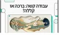
נגן שיעורים ושירים

איך לספר סיפור
ההרצאה הזו של עומר לווין היא פנינה מקצועית לכל מי שרוצה להבין לעומק את ההבדל בין "לבנות סיפור" ל"לספר סיפור"…

🗂 טבלת רגשות – מסודרת לפי קטגוריות ועוצמות
🗂 מילון רגשות אישי – גרסה מלאה 😨 פחד חלש : חשש, אי נוחות, פרפרים בבטן בינוני : חרדה, דאגה, עצבנות, חשד חזק …
מה ללמוד בחודש אלול בבית ספר?
מבוא: מצוקת הזמן והצורך בהכרעה חינוכית מערכת החינוך בישראל ניצבת בפני אתגר חינוכי ייחודי בחודש אלול – בשל רי…
צניעות מתוך אהבה - מדריך נפלא לחינוך בצניעות
ניתן לשחק כאן על החומר
אליעזר ורבקה מילים וביצועים אדמון ידידיה 1894-1982 מלחין מוזיקה
קנה עכשיו
סיכומי מחקר על המאמרים שלי (3)
סיכום מחקר: בזיעת אפך – קללה, תרופה או הדרך לחיות משמעות
ה_לחיות_משמעות__המהפך_המפת מצאתי כתוב בזה"ל "סיכום הקללות שבתורה". א) בזעת אפך תאכל לחם, ארורה האדמה בעבורך, ב…
סיכום מחקר: כשאור צומח מחושך
ים_והיישום_המעשי_להתמודדות_עם
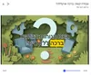
סיכום מחקר: בזיעת אפיך – האם הקדמה הטכנולוגית ברכה או קללה
סיכום נוטבוק - - בזיעת_אפיך__האם_הקדמה_הטכנולוגית_היא_ברכה_או_קללה_קיומית_בעידן_
אפליקציות ומדריכי עיצוב (15)
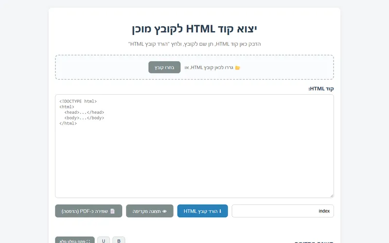
יצוא קוד HTML לקובץ
כלי להדבקת קוד HTML ושמירתו כקובץ
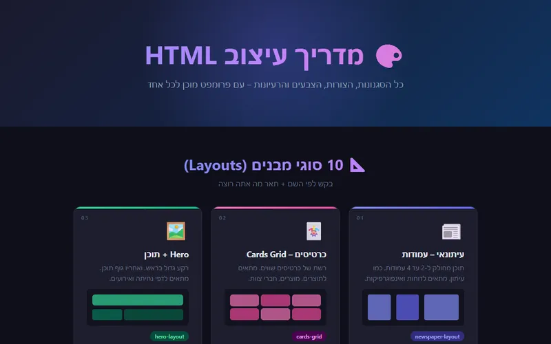
מדריך עיצוב 1
מדריך עיצוב HTML – כל הסגנונות 🎨 מדריך עיצוב HTML כל הסגנונות, הצורות, הצבעים והרעיונות – עם פרומפט מוכן לכל א…
מדריך עיצוב 2
מדריך עיצוב HTML – חלק ב' | 40 סגנונות + פרומפטים ✦ חלק ב׳ – עם פרומפטים 40 סגנונות + פרומפט מוכן כל כרטיס כול…
מדריך חלק 3 - גדול
מדריך HTML – חלק ג׳ | 50 סגנונות + פרומפטים ✦ חלק ג׳ – 50 סגנונות + פרומפטים 50 סגנונות + פרומפט לכל אחד 🎬 10 …
מדריך עיצוב 4
מדריך HTML – חינוך יהודי | בנים ובנות | 50 סגנונות 👦 בנים 👧 בנות ✡️ שניהם חינוך יהודי בנים ובנות 50 סגנונות HT…
קטלוג כתבים מלא
✦ קטלוג כתבים מלא ✦ כל סגנון כולל שם הפונט + דוגמה + פרומפט מוכן להעתקה ✍️ קטגוריה א׳ — כתב יד #01 Dancing Scr…
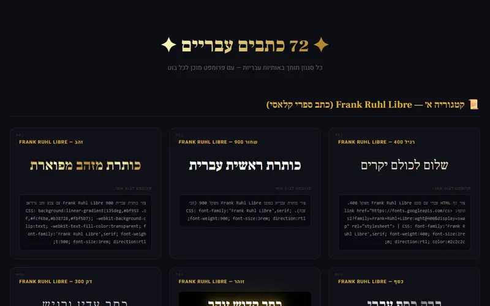
קטלוג כתבים עבריים
מלא ✦ 72 כתבים עבריים ✦ כל סגנון תומך באותיות עבריות — עם פרומפט מוכן לכל בוט 📜 קטגוריה א׳ — Frank Ruhl Libre …
סגנונות של תמונות 1
סגנונות של תמונות
כל סגנונות הדפים שיצרנו
קטלוג מרוכז של תבניות HTML, עם שם הסגנון, מתי להשתמש בו, ומה בדיוק לכתוב בפרומפט כדי לבקש אותו שוב. איך להשתמש…
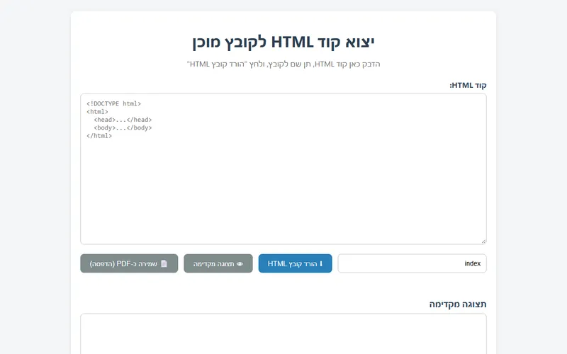
הופך טקסט ל HTML ו PDF
יצוא קוד HTML לקובץ יצוא קוד HTML לקובץ מוכן הדבק כאן קוד HTML, תן שם לקובץ, ולחץ "הורד קובץ HTML" קוד HTML: ⬇…
מנהל הפרומפטים
מנהל פרומפטים
מקצר שירים לצלצול
חותך שירים חותך שירים העלה קובץ, הגדר זמנים, הורד MP3 🎵 לחץ כדי לבחור קובץ שמע MP3, WAV, OGG, M4A... אורך הקוב…
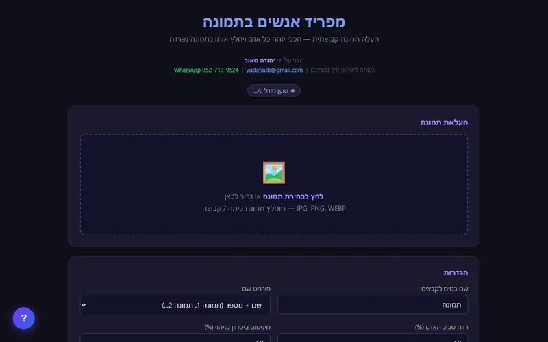
מפריד אנשים בתמונה
העלה תמונה קבוצתית — הכלי יזהה כל אדם ויחלץ אותו לתמונה נפרדת נוצר על ידי יהודה טאוב נשמח לשמוע איך נהניתם | W…